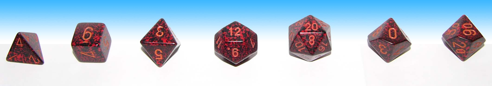

User:DualityDiscretion/Thoughtspace
(Doin my own thing ok pls dont judge I'LL MOVE THIS SOON)
| Y | |
| E | |
| E | |
| H | |
| A | |
| W | |
thank
Introduction
Dungeon and Dragons (D&D) is a game that is almost 80% dictated by the player's actions and decisions. A single game of D&D is commonly called a Campaign, which usually last several sessions.
In a Campaign, each person in a group of players will create Player Characters (PCs), except for 1 person who will become the Dungeon Master (DM). Within a Campaign, the players and DM work together to advance the characters' story.
The Dungeon Master narrates the world that the PCs are in. The DM's duties include:
- Creating/designing settings, for example:
- Towns which may contain inns and shops.
- Fields, Forests, and Roads outside of towns that may have various plants and wild animals, or even enemies like bandits.
- Dungeons, like caves or abandoned temples, which may be full of death traps, dangerous enemies, and treasures.
- Introducing and role-playing NPCs, hostile or non-hostile
- Non-hostile NPCs include townspeople, villagers, shopkeepers, city guards, etc.
- Hostile NPCs or Enemies can be wild predators, goblins, or even massive things like dragons.
- Narrate and coordinate combat sequences, which includes creating the field of battle (either with online tools or using pen and paper) as well as deciding what the enemies do.
- Designing special items which may be found, then used (or sold for money) by the players, usually as a reward for clearing a dungeon.
The Players create and role-play their characters within the world that the DM narrates.
- In battle situations, this includes moving, attacking, and casting spells.
- Outside of battles, it can be anything from interacting with other PCs, with NPCs, exploring areas to find loot, visiting a shop to buy items, stealing an item from a shop, pretending to be a prince to get free rooms and food from an innkeeper, etc.
- Rolling various dice as part of the role-play to determine whether a character succeeds or fails when attempting to do something, for example, rolling a d20 (20-sided die) as a Deception check to see if the innkeeper believes that you're a prince. More details later.
Gameplay
A game of DnD is dependent on the usage of dice, mainly in battle but also outside of it. Rolling these dice determines the outcome of various actions that PCs make.
6 types of dice are used in the game: d4, d6, d8, d12, d20, and d10. The d% or percentile die is sometimes added, but it's the same shape as d10 only with 2 digit numbers.

The d20 is the most often used in the game. Its functions include:
- Attack Rolls: Determining if a character's attacks hit or miss their target.
- Saving Throws: Determining if a spell or effect hits a character (i.e. whether or not a character saves against the effects)
- Ability/Skill Checks: Determining if a character succeeds or fails when attempting a certain ability/skill, for example, pushing a heavy rock (Strength ability), or lying to someone (Deception skill).
The other dice (d4 to d12) are used for various other things, most importantly determining the damage of a certain attack. For example, the damage of a Dagger attack is 1d4 damage (the value of d4 rolled 1 time), and the damage of the spell Scorching Ray is 2d6 (the value of d6 rolled 2 times).
Note: You don't actually have to roll a physical dice to play. Online dice rolling tools can also be used.
Hit Points
Hit Points (HP) is a number that determines how much damage a character can take before they can't fight anymore. Characters start with a low maxHP, and gains more as they level up.
When a character's HP hits 0, they fall unconscious and are unable to continue fighting, unless they are healed with spells or potions.
HP is fully recovered when a character takes a Long Rest (at least 8 hrs outside of battle, usually role-played as sleeping at night)
| More Details about Hit Points |
|---|
When hitting 0 HP, the character is considered Bleeding Out, and must do Death Saving Throws.
Other characters can attempt to manually stabilise a dying character by doing a Medicine Check or using an item (Healer's kit). Using healing spells or potions to recover some of their HP automatically stabilises them as well as brings them back to consciousness. For enemies, usually when they hit 0 HP they just die. HP can be partially recovered when a character takes a Short Rest (at least 1 hour outside of battle) by spending Hit Dice. A character has 1 Hit Die per level, which can be d6, d8, d10, or d12 based on the Class. Spending Hit Dice recovers the character's HP based on the value rolled. Up to half the character's total Hit Dice are recovered when taking Long Rest. |
Armor Class
Armor Class (AC) is a number that determines a character's ability to dodge, block, or otherwise not-get-hit by an attack. A character's AC is determined by what armor they're wearing and whether or not they're behind cover.
For example, character A using Chain Mail has a default AC of 16. This means enemies that want to attack her needs to roll 16 or higher on their Attack Roll to be able to hit her.
- If character A was hiding behind a box, the DM may consider her as using 1/2 cover, which increases her AC by 2.
- If character A was peeking out from behind a wall, the DM may consider her as using 3/4 cover, which increases her AC by 5.
The game mechanics do not dictate what happens when an creature's attack does not hit its target, so the DM and/or the character is free to narrate what actually happens. Maybe the character's armor blocked the attack, or she dodged out of the way, or catches the arrow, kisses it, then throws it away, ~*imagination*~.
| More Details about Armor Class |
|---|
A character has a basic AC value of 10. They can gain more AC by wearing armor that they're proficient in, based on their class.
For example, character B using Leather Armor has a default AC of 11 (10 base +1 Armor). Since Leather Armor is considered Light Armor, his Dexterity bonus is added to his AC. In this case, he has 16 DEX (+3 modifier), which means his final AC is 14. |
Attacking
A character can attack their enemy by doing an Attack Roll, which is 1d20 roll added with bonuses granted from the character's stats. If the result of the roll is higher than the target's AC, the attack hits, and the player can do a Damage Roll.
The Damage Roll is determined by the Weapon being used, and not affected by how the attack is made in the role-play perspective. For example, using a dagger to stab someone in the leg and using it to stab someone in the neck, both will be 1d4 damage. Exceptions may be made by the DM though.
Critical Hits happen when the d20 roll gives 20 (called Natural 20). In most cases, this is considered an automatic hit regardless of target's AC. When a critical attack is made, the damage roll uses 2x the amount of dice (or same amount of dice but the value result is x2). For example, a dagger that does 1d4 damage, deals 2d4 damage on a critical hit. This is usually role-played as the character doing a particularly deadly blow to the target.
Critical Failures happen when the d20 roll gives 1 (called Natural 1). Critical failures means the attack misses so badly that it causes a negative effect for the character. The official rule is to do an extra roll to determine what negative effect happens (detailed here), but DMs can also narrate their own scenarios. For example, the character's hand slips and the dagger falls 2 metres away, or the character trips(kesrimpet) on a random rock during the attack and falls down instead.
| More Details about Weapon Attacks |
|---|
| When a character is attacking using a Melee weapon, the character's Strength modifier is added onto the damage roll. When using a Ranged weapon, Dexterity modifier is added instead.
Characters also add their Proficiency modifier (based on their level) if they're using a weapon they're proficient in. Every class has its own list of weapon proficiency. Therefore, the complete Attack Roll formula is 1d20 + (str/dexMod) + (proficiencyMod), therefore it is possible to roll higher than 20 with the bonuses added. However, critical hits are still reserved for Natural 20s. |
Spells
Some classes of characters have the ability to cast Spells. Each spell has a level: level 1 up to level 9. Higher level spells are usually more powerful than low level spells.
To cast a spell, a character must spend a Spell Slot of the correct level (kinda the MP system in D&D). Different classes have different amounts of spell slots depending on their level. All spell slots are recovered when the character takes a Long Rest (sleeping at night).
- A Lv1 Wizard character has 2 Lv1 Spell Slots.
- This means he can cast a level 1 spell 2 times in battle before needing Long Rest.
- A Lv5 Wizard character has 4 Lv1 Spell Slots, 3 Lv2 Spell Slots, and 2 Lv3 Spell Slots.
- This means he can cast a level 1 spell 4 times, a level 2 spell 3 times, and a level 3 spell 2 times before needing Long Rest.
Cantrips (basically level 0 spells) can be cast as many times as you want without needing to spend Spell Slots.
It's possible to spend a higher Spell Slot to cast a lower level spell. This is called Higher Casting. This usually improves the effect of the spell. For example, Cure Wounds (level 1 spell) heals for 1d8 HP, but if cast at a higher spell slot, it heals an extra 1d8 per level (2d8 as a level 2 spell, 3d8 as a level 3 spell, etc.). Each spell has its own rules about Higher Casting.
| More Details about Spells |
|---|
There are 3 ways a spell interacts with its target:
Each class have a list of spells they can learn. Some spells are usable by multiple classes (for example, Healing Word can be used by Bards, Druids, and Clerics), while some are exclusive to certain classes (for example, Searing Smite is only available to Paladins). Among classes with spellcasting ability, there are some that can Prepare spells after every Long Rest. For non-preparing classes (Bards, Warlocks, Rangers, Sorcerers), they learn a certain number of spells from their class list based on their level. When leveling up, they can choose to learn new spells, and/or replace their currently learned spell with another one. For preparing classes (Wizards, Clerics, Paladins, Druids), they can prepare a certain number of spells based on their level. After each Long Rest, they can replace one or more (or all) of their currently prepared spells with other ones that are available to their class. Even more details about Spellcasting mechanics is in the Character section. |
Ability Checks & Saving Throws
Ability Checks or Saving Throws are rolls that characters must make to determine success or failure in trying to do some specific actions. This is done by rolling a d20 and adding modifiers determined by your character's stats.
The result of the roll is compared with a Difficulty Class (DC) value, which dictates how difficult the task is. If the roll is higher than the DC, it is considered successful.
Ability Checks and Saving Throws will be based on one of 6 abilities: Strength, Dexterity, Constitution, Intelligence, Wisdom, and Charisma. Your character's Ability Score may give a bonus or a penalty to the value of your dice roll.
Beyond Ability Checks, there are also Skill Checks which are an extension of abilities. Aside from your Ability Scores giving a bonus, you also gain bonuses if your character is Proficient with the skill, explained later.
| More Details about DC |
|---|
|
Task difficulty based on DC number:
DC can be determined in 3 ways.
|
| More Details about Abilities & Skills | ||||||||||||||||||||||||||||
|---|---|---|---|---|---|---|---|---|---|---|---|---|---|---|---|---|---|---|---|---|---|---|---|---|---|---|---|---|
A more in-depth explanation of Ability Scores are in the Character Section.
/* There are no skills based on Constitution | ||||||||||||||||||||||||||||
Example Scenario:
- Character A walks through a forest and is asked by the DM to do a Perception Check. She rolls a 14 on the d20, and due to her high Wisdom score, gets a +3 bonus, making it a 17, which beats the DC of 15 that was set by the DM.
- The DM narrates her noticing a boulder that's blocking a cave. Character A chooses to approach it, then she notices a symbol on the boulder. The DM asks her to do a Religion Check, but fails by rolling a 3 despite her +2 Intelligence bonus and +3 Proficiency, against the DC of 10. This means she can't seem to remember what the symbol is supposed to mean.
- Character A then decides to move the boulder, so the DM asks her to do a Strength Check. With a natural 20 roll, she successfully moves it and opens the way into the cave.
- She then decides to move in stealthily, so the DM asks her to do a Stealth Check, which she rolls a 13 with a +1 Dexterity bonus, total of 14.
- Inside, she sees 2 Undead skeletons. The DM rolls a Perception Check for the skeletons, and one of them rolls a 18, contested against her Stealth roll of 14. This means it notices her coming in despite her attempts to stay hidden.
- Before the DM dictates the start of combat, Character A decides to do a surprise attack at one of the Skeleton, using the cantrip Sacred Flame. This spell forces the Skeleton to do a Dexterity Saving Throw against Character A's Cleric Spell DC of 13 (based on her Wisdom). The Skeleton succeeds with a roll of 14, which means it successfully saves and takes no damage from the spell.
Advantage and Disadvantage
Some spells or circumstances can give you Advantage or Disadvantage on your d20 roll.
When you have Advantage, you roll the d20 2x instead of once, and use the higher number. Example of getting advantage is when attacking someone while stealthed.
When you have Disadvantage, you roll the d20 2x instead of once, and use the the lower number. Example of getting disadvantage is when trying to attack someone while blinded.
Initiative and Turns
Initiative Rolls are used to determine who goes first in combat. The roll itself is just a d20 roll plus Dexterity bonus.
For example, as Character A goes into combat with the 2 skeletons, She and her 2 enemies all roll Initiative.
- Skel A rolls 21
- Character A rolls 17
- Skel B rolls 4
This means that in each round of combat, Skel A gets their turn first, then Character A, then Skel B.
A character/creature's Turn consists of 3 things:
- A Movement, to change the character's position.
- An Action which is usually an attack or a big spell. Can also be used to move as a Dash action.
- A Bonus Action which is either a spell, a follow-up to a spell, or a special Class feat.
Every round, a creature also have A Reaction, which can be spent to do Opportunity Attacks on enemies who are running away, or to cast certain spells.
Each spell has specific info about whether it needs to be cast as an Action or a Bonus Action.
A creature can choose to spend their Movement, Action, or Bonus Action to do nothing if circumstances call for it.
Once a creature spends all 3, their turn is over, and the next creature in line begins their turn. Once the last creature finishes their turn, the next round begins starting with the first creature again.
Example Combat
Round 1
- Skel A, who is actually a Skeletal Mage:
- Spends its Action to cast Fire Bolt. It hits Char A with a 17 spell attack roll against Char A's AC of 16, dealing 5 (1d10) damage.
- Spends its Movement to move back as far it can go in 1 turn, which is 30 feet.
- Spends its Bonus Action to cast Misty Step, teleporting it 30 feet further to try getting out of range of Char A's ranged weapon.
- Char A:
- Spends her Bonus Action to cast Healing Word, healing herself for 3 (1d4) HP.
- Spends her Movement to get closer to the enemies, but position herself behind a rock pillar to gain 3/4 cover.
- Spends her Action to attack Skel A using her Crossbow, but due to the distance, it's at a Disadvantage. It misses Skel A with a
19and 4 attack roll against Skel A's AC of 16. The DM narrates that the arrow shoots too far to the left and hits the cave wall.
- Skel B:
- Spends its Movement to run closer to Char A, but doesn't get into melee range.
- Spends its Action to attack Char A using its Shortbow. It misses with a Natural 1 roll. The DM Narrates that the slightly rotted Shortbow broke as it was trying to attack with it.
- Spends its Bonus action doing nothing.
Round 2
- Skel A:
- Spends its Action to cast Scorching Ray. With 3 spell attack rolls of 7, 19, and 10, it all misses against Char A's total AC of 16+5 due to her using 3/4 cover. The DM narrates that the spell hits the rock pillar instead of the character.
- Spends its Bonus Action to do nothing.
- Spends its Movement staying in place.
- Char A:
- Spends her Movement and Action to Dash 60ft towards Skel A.
- Spends her Bonus Action to cast Spiritual Weapon, placing it next to Skel A to attack. The player narrates a large, glowing hammer appearing next to Skel A.
- Skel A spends its Reaction to cast Shield, raising its AC by 5. However, Char A's attack crits with a Natural 20, hitting Skel A with 14 (2d8) damage.
- Skel B:
- Spends its Movement to engage Char A in melee range.
- Spends its Action to attack Char A using its Shortsword. It misses with a roll of 8 against Char A's AC of 16. The DM Narrates that Char A dodges Skel B's slow attack easily.
- Spends its Bonus Action doing nothing.
- (If Char A runs out of Skel B's melee range without using a Disengage action, it can spend a Reaction to deal an Opportunity Attack against her.)
Characters
A character can either refer to a Player Character (PC) or a Non Player Character (NPC).
All characters are defined statistics, including: Class, Level, Ability Scores & Bonuses, Proficiencies, Race & Background, and Feats.
Class
A character's Class is usually its most important aspect. It determines:
- Hit Dice type and HP value
- Armor & Weapon Choices
- Saving Throw Proficiencies
- Skill Proficiencies
- Tool Proficiencies
- Spellcasting Ability
- Spell list
- Class-exclusive traits and features.
Below is a quick list of classes.
| Classes | |||
|---|---|---|---|
| Class | Details | Class | Details |
| Barbarian |
|
Bard |
|
| Fighter |
|
Druid |
|
| Paladin |
|
Cleric |
|
| Monk |
|
Sorcerer |
|
| Ranger |
|
Warlock |
|
| Rogue |
|
Wizard |
|